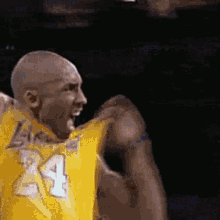

Tag de Hiperlink
A tag a href de fine um hiperlink(conexão), que é utilizado para vincular uma página a outra.
O atributo mais importante desta tag é o hrefque define a página de destino que será exibida após o clique do mouse no link.
Por padrão, os links aparecerão da seguinte fomr aem todos os navegadores:
um link não visitada é sublinhado de azul
um link visitado é sublinhado de roxo
um link ativo é sublinhado de vermelho
Exemplo
Link para o arquivo h1-h6
clique aqui para visitar a página sobre Marcadores H1-H6
Link para o site do SENAI Suzano
Clique aqui para visitar a página do SENAI Suzano
Para que o link abra a página em uma nova guia devemos acrecentar o atributo target="_black" aninhado com o a href
Clique aqui para abrir o link em uma nova janela do navegador
Você também pode utilizar a tag button paara adicionar um botão clicável no link
Clique no botão para abrir a página.
Você também pode utilizar a tag img para adicinar um link em uma imagem
Clique na imgaem  para abrir a página
para abrir a página
Usarmos a tag hr para adicionar uma linha horizontal
dividindo o documento e a tag br
para criar uma quebra de linha no
parágrafo
Clique na imgaem 